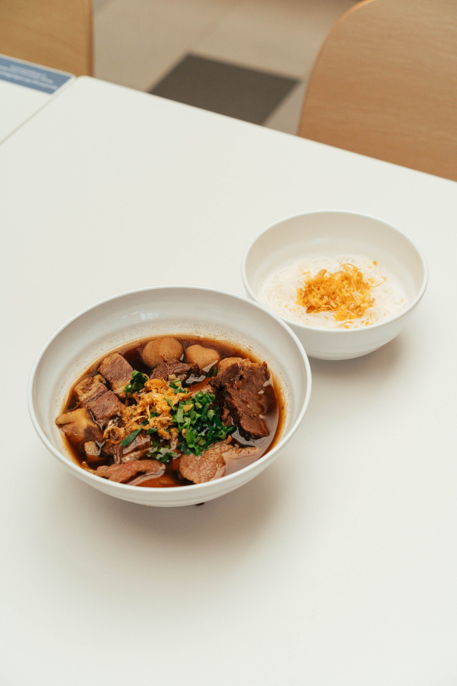
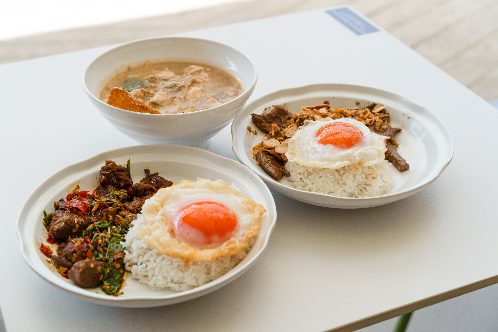
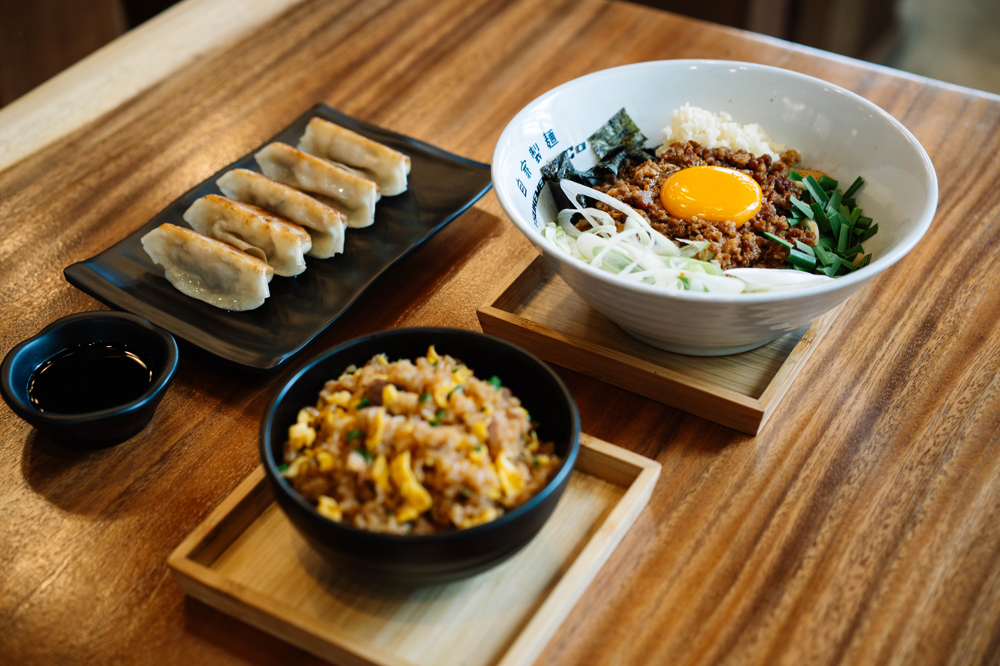
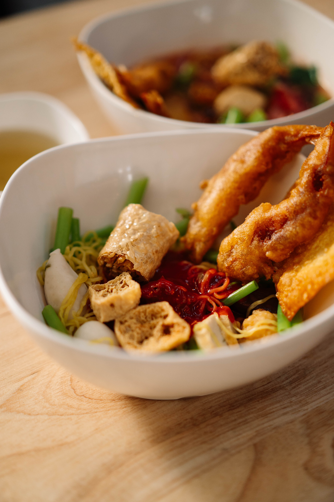

loop TV · พัฒนาการ 32 · 1920×1080

เหมือนหน้าเมนูร้านกาแฟ premium — อบอุ่น อ่านง่าย เหมาะกับ family restaurant vibe

โปสเตอร์ฟิล์มยุค 90s เจอ street food — ตัวอักษรใหญ่มาก รู้สึกได้ทันทีแม้มองจากไกล

Netflix food series energy — แถบดำบนล่างสร้าง cinematic feel ทันที lower-third สะอาด อ่านง่าย

delivery app promo × street food — ดูเร้าใจ เหมาะถ้าอยากให้คนหยุดมอง ดึงดูดคนเดินผ่านได้ดี